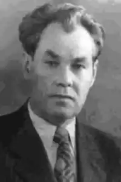

ІВАН ШАПОВАЛ
Іван Максимович Шаповал народився 1905 року в с. Гаражівці, Близнюківського району, Харківської області, в селянській родині.
З 1928 по 1933 рік учився на робітфаці й працював у Дніпропетровському історичному музеї. З 1934 по 1938 рік учився в металургійному інституті, а потім працював інженером на заводі ім. Карла Лібкнехта та ДПРЗ. Далі — доцент Дніпропетровського гірничого інституту, кандидат технічних наук. Учасник Великої Вітчизняної війни. В післявоєнні роки вийшло в світ кілька наукових праць І. Шаповала: "Наука и техника на Днепропетровщине" і "Ученые Днепропетровщины на службе семилетки", "Продлить жизнь деталей машин" та нариси про вчених — "Стежками незвіданими". Часто виступав в періодичній пресі з статтями та нарисами. Опубліковано в журналах понад 40 науково-технічних його статей.